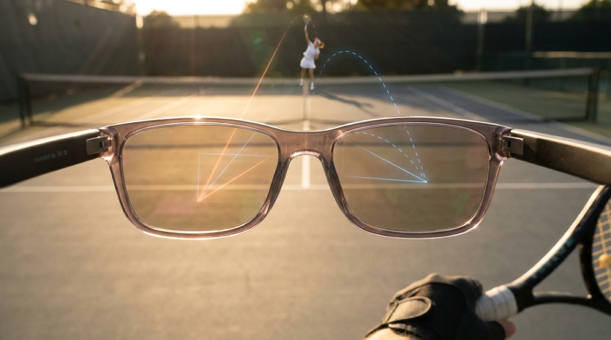

Meet Benji.
Your AI tennis coach, right where your eyes are. Benji watches the rally from your point of view and talks you through your game in real time.

POV coaching through the glasses camera
On-device pose detection, 40/40 benchmark frames
TrackNet ball tracking
Real-time audio feedback as you play
Built with the Meta DAT SDK
Talk to us about Benji